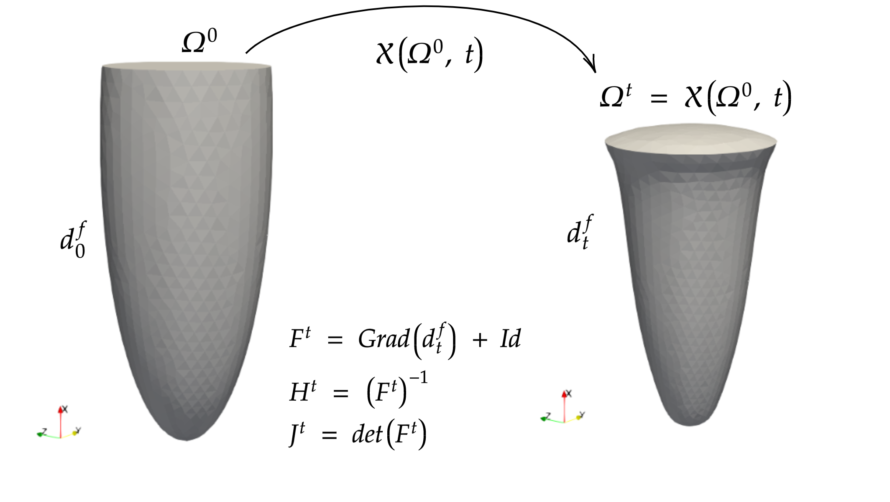

On Monolithic and Chorin-Temam schemes for incompressible flows
and its application to left ventricular FSI
Joint work with Cristóbal Bertoglio.
Reidmen Aróstica - June 28, 2022, University of Groningen, The Netherlands. MS06
The setting of the problem
Weak formulation
Our interest is in $(\mathbf{u}(t), p(t)) \in \mathbf{H}^1(\Omega^0) \times L^2_0(\Omega^0)$ for $t \in (0, T)$ s.t. \begin{equation} \begin{aligned} \int_{\Omega^0} \rho J^t \frac{\partial \mathbf{u}}{\partial t} \cdot \mathbf{v} + \rho J^t Grad(\mathbf{u}) H^t (\mathbf{u} - \mathbf{w}) \cdot \mathbf{v} + J^t 2\mu \epsilon^t(\mathbf{u}): \epsilon^t (\mathbf{v}) \text{d} \, \mathbf{X} & \\ -\int_{\Omega^0} Div(J^t H^t \mathbf{v}) p + Div(J^t H^t \mathbf{u}) q \text{d} \, \mathbf{X} & = 0 \end{aligned} \end{equation}
for all $(\mathbf{v}, q) \in \mathbf{H}^1_0(\Omega^0) \times L^2_0(\Omega^0)$ with $\mathbf{u}(0) = \mathbf{u}_{init} \in \mathbf{H}^1_0(\Omega^0)$
Time Continuous stability analysis
Proposition [Chap 9] Provided $(\mathbf{u}(t), \mathbf{p}(t)) \in \mathbf{H}^1(\Omega^0) \times L^2_0(\Omega^0)$ a solution to the continuum iNSE-ALE problem, the following energy balance holds: \begin{equation} \frac{\partial}{\partial t} \int_{\Omega^0} \frac{\rho}{2} J^t \vert \mathbf{u} \vert^2 \, \text{d} \mathbf{X} = - \int_{\Omega^0} J^t 2\mu \vert \epsilon(\mathbf{u}) \vert^2 \, \text{d} \mathbf{X} \end{equation}
Formaggia, L. Quarteroni, A. Veneziani. A. (Eds.) 2009. Cardiovascular Mathematics. Springer Milan.
General Formulation
Given a conforming finite element space $\mathbf{V} \times \mathbf{Q}$ of $\mathbf{H}^1(\Omega^0) \times L^2_0(\Omega^0)$ for the velocity and pressure fields, the discrete problem reads
Find $(\mathbf{u}^{n+1}, p^{n+1}) \in \mathbf{V}\times \mathbf{Q}$ s.t. \begin{equation} \mathcal{A}(\mathbf{u}^{n+1}, \mathbf{v}) - \mathcal{B}(\mathbf{v}, p^{n+1}) + \mathcal{B}(\mathbf{u}^{n+1}, q) = \mathcal{F}(\mathbf{v}) \quad \forall (\mathbf{v}, q) \in \mathbf{V}\times \mathbf{Q} \end{equation}
being \begin{equation} \begin{aligned} \mathcal{A} (\mathbf{u}, \mathbf{v}) := & \int_{\Omega^0} \rho \frac{J^{\star\star}}{\tau} \mathbf{u} \cdot \mathbf{v} \, \text{d}\mathbf{X} + \int_{\Omega^0} \rho J^{\star} Grad(\mathbf{u}) H^{\star} (\mathbf{u}^{\ast} - \mathbf{w}^{\ast\ast}) \cdot \mathbf{v} \, \text{d}\mathbf{X} + \int_{\Omega^0} J^{\star} 2\mu \epsilon^{\star}(\mathbf{u}):\epsilon^{\star}(\mathbf{v}) \, \text{d}\mathbf{X} \\ & + \alpha \color{blue}{\int_{\Omega^0} \frac{\rho}{2} \left( \frac{J^{n+1} - J^{n}}{\tau} - Div\left( J^{\star} H^{\star} \mathbf{w}^{\ast\ast} \right) \right) \mathbf{u} \cdot \mathbf{v} \, \text{d}\mathbf{X}} + \beta \color{green}{\int_{\Omega^0} \frac{\rho}{2} Div\left( J^{\star} H^{\star} \mathbf{u}^{\ast} \right) \mathbf{u} \cdot \mathbf{v} \, \text{d}\mathbf{X}} \end{aligned} \end{equation}
with $\alpha, \beta \in \{0, 1\}$ given parameters, and \begin{equation} \begin{aligned} \mathcal{B}(\mathbf{u}, q) & := \int_{\Omega^0} Div\left( J^{\star} H^{\star} \mathbf{u} \right) q \, \text{d}\mathbf{X} \quad \forall q \in Q, \quad \mathcal{F}(\mathbf{v}) := \int_{\Omega^0} \rho \frac{J^{\star\star}}{\tau} \mathbf{u}^n \cdot \mathbf{v} \, \text{d}\mathbf{X} \quad \forall \mathbf{v} \in \mathbf{V} \end{aligned} \end{equation}
Is it general enough?
- Using $\alpha = \beta = 0$
- Basting et al. 2007, Murea et al. 2016
- Langer et al. 2016, Landajuela, 2016
- Using $\alpha = \beta = 1$
- Lozovskiy et al. 2018, Smaldone, 2014
- LeTallec et al. 2001, Wang et al. 2020
Results
Proposition By assuming well-posed, orientation-preserving deformation mappings, the Monolithic formulation has unique solution for inf-sup stable finite element spaces if $2J^{\star\star} + J^{n+1} - J^{n} > 0$ and $\alpha = \beta = 1$.
Proposition Under the previous assumptions, $\alpha = \beta = 1$ and $\star\star = n$, the monolithic scheme is unconditionally energy stable, with estimate \begin{equation} \begin{aligned} \int_{\Omega^0} \rho \frac{J^{n+1}}{2\tau} \vert \mathbf{u}^{n+1} \vert^2 \, \text{d} \mathbf{X} - \int_{\Omega^0} \rho \frac{J^n}{2\tau} \vert \mathbf{u}^n \vert^2 \, \text{d}\mathbf{X} &= -\int_{\Omega^0} 2\mu J^{\star} \vert \epsilon^{\star}(\mathbf{u}^{n+1}) \vert^2 \, \text{d} \mathbf{X} \\ & - \int_{\Omega^0} \frac{\rho}{2\tau} J^{n} \vert \mathbf{u}^{n+1} - \mathbf{u}^{n} \vert^2 \, \text{d} \mathbf{X}. \end{aligned} \end{equation}
No restrictions apply to $\star, \ast, \ast\ast$.
Formulation
Given $\mathbf{\widetilde V} $ a conforming space of $\mathbf{H}^1_0 (\Omega^0)$ and $ \widetilde Q$ a conforming space of $ L^2_0 (\Omega^0) \cap H^1(\Omega^0)$, $\tilde{\mathbf{u}}^{0} \in \mathbf{\widetilde V}$, for $n\geq0$:
Pressure-Projection Step $(\text{PPS})_{n}$ Find $p^{n} \in \widetilde{Q}$ s.t. \begin{equation} \int_{\Omega^0} \frac{\tau}{\rho} J^{\circ} Grad(p^{n}) H^{\circ} : Grad(q) H^{\circ} \, \text{d}\mathbf{X} = - \int_{\Omega^0} Div\left( J^{\circ} H^{\circ} \tilde{\mathbf{u}}^{n}\right) q \, \text{d}\mathbf{X} \quad \forall q \in \widetilde{Q} \end{equation}
Fluid-Viscous Step $(\text{FVS})_{n+1}$ Find $\tilde{\mathbf{u}}^{n+1} \in \mathbf{\widetilde{V}}$ s.t. \begin{equation} \begin{aligned} &\int_{\Omega^0} \rho J^{\star\star} \frac{\tilde{\mathbf{u}}^{n+1} - \tilde{\mathbf{u}}^n}{\tau} \cdot \mathbf{v} \, \text{d}\mathbf{X} + \int_{\Omega^0} \rho J^{\star} Grad(\tilde{\mathbf{u}}^{n+1}) H^{\star} (\tilde{\mathbf{u}}^{n} - \mathbf{w}^{\ast\ast}) \cdot \mathbf{v} \, \text{d}\mathbf{X} \\ & + \int_{\Omega^0} J^{\star} 2 \mu \epsilon^{\star} (\tilde{\mathbf{u}}^{n+1}) : \epsilon^{\star} (\mathbf{v}) \, \text{d}\mathbf{X} - \int_{\Omega^0} Div(J^{\circ \circ} H^{\circ \circ} \mathbf{v}) p^n \, \text{d}\mathbf{X} \\ &+ \color{blue}{\int_{\Omega^0} \frac{\rho}{2} \frac{J^{n+1} - J^{n}}{\tau} \tilde{\mathbf{u}}^{n+1} \cdot \mathbf{v} \, \text{d}\mathbf{X}} + \int_{\Omega^0} \frac{\rho}{2} Div\left( J^{\star} H^{\star}(\tilde{\mathbf{u}}^{n} \color{blue}{- \mathbf{w}^{\ast\ast}})\right) \tilde{\mathbf{u}}^{n+1} \cdot \mathbf{v} \, \text{d}\mathbf{X} = 0 \quad \forall \mathbf{v} \in \mathbf{\widetilde{V}} \end{aligned} \end{equation}
Energy result
Proposition Under assumptions $\circ = \circ \circ = \star\star = n$, the solution to the CT formulation is unconditionally stable, with estimate: \begin{equation} \begin{aligned} \int_{\Omega^0} \rho \frac{J^{n+1}}{2\tau} \vert \tilde{\mathbf{u}}^{n+1} \vert^2 \, \text{d}\mathbf{X} - \int_{\Omega^0} \rho \frac{J^{n}}{2\tau} \vert \tilde{\mathbf{u}}^{n} \vert^2 \, \text{d} \mathbf{X} \leq & - \int_{\Omega^0} J^{\star} 2\mu \vert \epsilon^{\star} (\tilde{\mathbf{u}}^{n+1}) \vert^2 \, \text{d}\mathbf{X} \\ & - \int_{\Omega^0} J^{n} \frac{\tau}{2\rho} \vert Grad(p^n) H^{n} \vert^2 \, \text{d}\mathbf{X} . \end{aligned} \end{equation}
No restrictions apply to $\star$.
Test case (2D)

What should we measure?
The results are assessed using time-varying normalized parameters $\delta_{\text{M}}^{m}, \delta_{\text{CT}}^{m}$ defined by \begin{equation} \label{eq:energy_error} \begin{aligned} \delta_{M}^{m+1} &:= D^{m+1} + E_{st}^{\star} + \int_{\Omega_0} \frac{\rho J^{\star\star}}{2\tau} \vert \mathbf{u}^{m+1} - \mathbf{u}^{m} \vert^2 \, \text{d}\mathbf{X} \\ \delta_{CT}^{m+1} &:= D^{m+1} + E^{\star}_{st} + \int_{\Omega_0} \frac{\tau J^{\circ}}{2 \rho} \vert (H^{\circ})^T Grad(p^m) \vert^2 \, \text{d}\mathbf{X} \\ D^{m+1} &:= \int_{\Omega_0} \frac{\rho}{2\tau} \left( J^{m+1} \vert \mathbf{u}^{m+1} \vert^2 - J^m \vert \mathbf{u}^m \vert^2 \right) \, \text{d}\mathbf{X} , \quad E^{\star}_{st} = \int_{\Omega_0} 2 \mu J^{\star} \vert \epsilon^{\star} (\mathbf{u}^{n+1}) \vert^2 \, \text{d}\mathbf{X}. \end{aligned} \end{equation}
We test Monolithic (M) schemes with $\color{blue}{(\star, \ast, \ast\ast) = (n+1, n, n+1)}$ and Chorin-Temam (CT) schemes in the form $(\color{blue}{\star, \ast\ast, \circ, \circ\circ) = (n+1, n+1, n, n)}$ with $\star\star \in \{\color{blue}{n}, \color{red}{n+1}\}$ in all cases.
Using the previous propositions $\delta_{\text{M}}^{m}=0$ and $\delta_{\text{CT}}^{m} \leq 0$ if $\color{blue}{\star\star = n}$.
Numerical result

Summary of the numerical experiment in terms of energy balance.
Left: Monolithic residual error values $\hat{\delta}_{\text{M}}$,
Right: Chorin-Temam residual error values $\hat{\delta}_{\text{CT}}$.
Test case in 3D
Which example should we take? FSI & Benchmark
Benchmark Simulation
Current model Simulated with $[\mathbb{P}_2]^3$ and Pfaller et al. (2019) material parameters over a half ellipsoid domain. ~17.000 tetrahedra ~90.000 DoF
The FSI algorithm
Results using semi-implicit FSI algorithm
Right side: One-way approach. Solid: ~17.000 tetrahedra, ~14.000 DoF and Fluid: ~15.000 tetrahedra, ~3.000 (per comp.)
Summary
- To the best of the authors knowledge, the unconditionally stable Chorin-Temam scheme derived here has not been reported yet.
- The literature lacks a physiological cardiac mechanics benchmark.
- An semi-implicit FSI algorithm coupling a CT scheme with solid material provides an efficient approach.
Contact Information
- c.a.bertoglio@rug.nl
- r.a.arostica.barrera@rug.nl
Thank you!

https://bit.ly/30NtCtD
EXTRA: Why a new benchmark?
- Reproducibility of others' results & support collaboration with clinicians.
-
Land et al. (2015) proposed a first benchmark for cardiac mechanics, but it lacks some relevant characteristics. - We aim to propose a new set of cardiac benchmark problems and solutions for assessing passive and active material behavior.
Strong Formulation
Denoting $\mathbb{T} := \mathbb{T}(u)$ the Cauchy stress tensor for a displacement field $u$ such that $\mathbb{S} := F^{-1} \mathbb{T} F^{-T}$, we are interested in \begin{equation} \begin{aligned} \color{red}{\rho \ddot{u}} - Div\big( J \mathbb{T} F^{-T} \big) & = \mathbf{0} \quad \text{ in } \Omega \\ \mathbb{T} J F^{-T} N &= pJ F^{-T} N \quad \text{ on } \Gamma_{endo} \\ \color{red}{\mathbb{T} J F^{-T} N \cdot N + \alpha_{epi} u \cdot N + \beta_{epi} \dot{u} \cdot N} & = 0 \quad \text{ on } \Gamma_{epi} \\ \mathbb{T} J (F^{-T} N) \times N & = 0 \quad \text{ on } \Gamma_{epi} \\ \color{red}{\mathbb{T} J F^{-T} N + \alpha_{top} u + \beta_{top} \dot{u}} & = \mathbf{0} \text{ on } \Gamma_{top} \end{aligned} \end{equation}
where $N$ denotes the normal direction and $p = 0$ at the $\Gamma_{endo}$.
Highlighted are the new components not present in Land et al. (2015)
Constitutive Model
We consider the heart material behavior characterized via the 2nd Piola-Kirchhoff stress tensor $\mathbb{S}$ \begin{equation} \mathbb{S}(t) := \frac{\partial \Psi_{aniso}}{\partial \mathbb{E}} + \color{red}{\frac{\partial \Psi_{visco}}{\partial \dot{\mathbb{E}}}} + \color{red}{\tau(t)} f \otimes f, \quad t > 0 \end{equation}
-
The
Holzapfel & Ogden (2009) energy $\Psi_{aniso}$ withSimo & Miehe incompressibility penalty for $\kappa > 0$: \begin{equation} \begin{array} \quad \Psi_{aniso} &= \frac{a}{2b} \exp \big \{ b (\bar{I}_1 - 3) \big \} + \sum_{i \in \{f, s\} } \frac{a_i}{2b_i} \chi (I_{4i}) \big( \exp \big \{ b_i (I_{4i} - 1)^2 \big \} - 1 \big) \\ & + \frac{a_{fs}}{2 b_{fs}} \big( \exp \{ b_{fs}I_{8fs}^2 \} - 1 \big) + \frac{\kappa}{4} \big( J^2 - 1 - 2 ln(J) \big) \end{array} \end{equation} - Viscoelastic energy with parameters $\eta>0$: \begin{equation} \color{red}{\Psi_{visc} := \frac{\eta}{2} tr( \dot{\mathbb{E}}^{2})} \end{equation}
-
Time-dependent active stress $\tau(t) f \otimes f$ with
Bestel et al. (2001) stress function $\tau(t)$ solution to: \begin{equation} \color{red}{\dot{\tau}(t) = - \vert a(t) \vert \tau(t) + \sigma_0 \vert a(t) \vert_{+}} \end{equation}